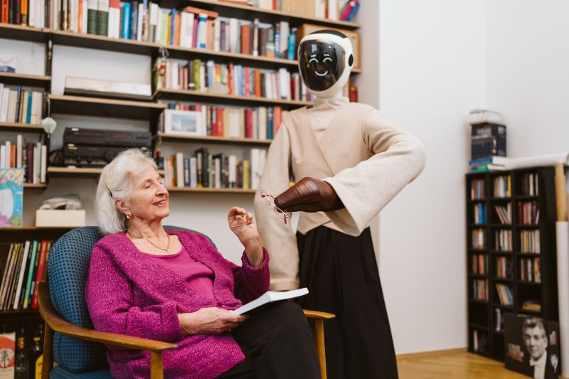

TEDxMünchen
Munich Urban Colab, Munich
A range of speakers talked about personal motivation and overcoming obstacles, and some showcased their futuristic companies. I was especially inspired by Alona Pammer, co-founder of Devanthro, who is building humanoid robots for aged care.
Two things stood out to me about her approach. First, the robots are designed to support people’s independence, guiding elderly people through everyday tasks rather than taking over completely. Second, because homes are so unpredictable, her robots can first be operated remotely in VR, learning the specific environment before they have to work on their own. I’m excited to follow her work.
I also heard about Starforge for the first time, a company working towards factory-built, modular fusion reactors that can be deployed as a fleet. I was very curious about their approach and timeline for viable fusion energy, but the founder was understandably tight-lipped.
The event location was incredible, and I was fortunate to meet someone who works in the colab space to give me a tour of the workspaces.